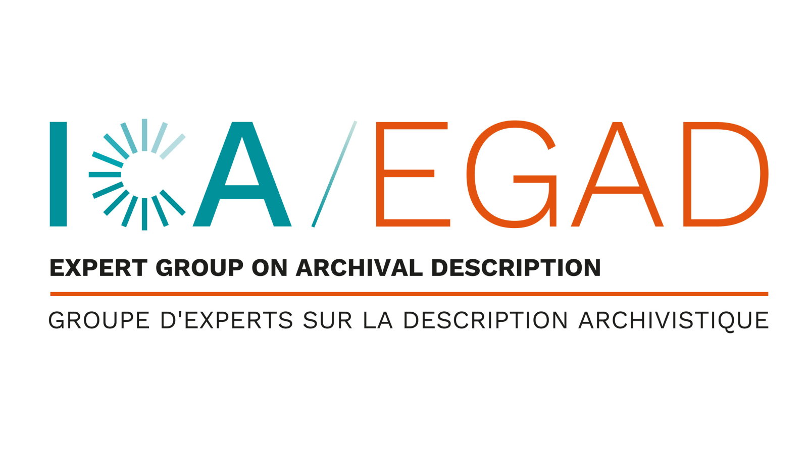

Use the green button to edit the resource (moderated: it may take a few days before changes appear).
OpenRiC Workspace is an archival management application built on Records in Contexts, for archives setting up a new digital environment. Units of description, agents, repositories, places, activities and the institution's vocabularies are RiC entities with persistent IRIs. Every relation is held as an assertion recording who made it and on what evidence, under a hash-chained audit log.
Archivists describe in ISAD(G), ISAAR(CPF) and ISDIAH screens that label each field with the RiC-O term it is stored and exported as. Description is reviewed and published per value and language. EAD 2002, EAD3 and AtoM CSV can be imported and exported, and digital objects come with image, PDF, audio, video and 3D viewers.
A public catalogue needs no sign-in. It shows each entity's relationship graph in 2D or 3D, with the same relationships as an accessible list, and offers RiC-O JSON-LD, OAI-PMH and an OpenRiC read API. The demonstration catalogue is tested with authority records, places and finding aids from the Archives nationales de France's open data (Référentiels 2.0), credited on its home page.
It is one implementation of the OpenRiC specification, not the specification itself.
In development since 19 October 2026 (release v0.0.44). V0.1, the first release meant for archivists, has not been reached yet. AGPL-3.0.